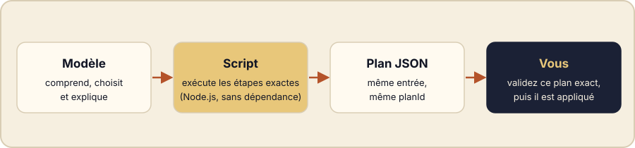

Demandez à un modèle de lister les 170 fichiers qu’une installation créerait : vous obtiendrez une réponse qui a l’air juste. Redemandez demain, la réponse peut changer. Le modèle n’est pas en cause : compter et lister ne sont simplement pas sa fonction.
L’idée en une image
Un harnais, ce n’est pas seulement des prompts. Les plus fiables confient chaque étape exacte et répétable à un outil déterministe, et gardent le modèle pour ce que lui seul sait faire : comprendre la demande, choisir entre des options et expliquer le résultat. Entre les deux, un document que l’on peut relire, souvent un plan en JSON.

Ce que l’on voit : deux fois le même plan
Dans votre assistant, vous écrivez : « prépare l’installation d’AI-KIDO sur ce projet, deux fois de suite, et montre-moi l’identifiant du plan ». L’installateur de la version 1.5 est un script : l’assistant le lance deux fois sur le même projet et n’affiche que l’identifiant du plan. Voici la commande qu’il exécute, pour qui veut voir sous le capot :
for i in 1 2; do
node aikido-dist/claude-code/scripts/bootstrap-plan.mjs \
--root . --package aikido-dist/claude-code --mode STANDARD \
| node -pe 'JSON.parse(require("fs").readFileSync(0, "utf8")).planId'
done60314f9d5a6f5213c406498c4263213326b94294c3d7398a358640b8a5f5ff46
60314f9d5a6f5213c406498c4263213326b94294c3d7398a358640b8a5f5ff46L’identifiant est un hachage du plan entier : chemin du projet, mode, assistant, version du paquet et chaque fichier prévu. Le vôtre sera donc différent de celui ci-dessus, mais sur un même projet il reste identique d’une exécution à l’autre. Si un seul chemin prévu changeait, l’identifiant changerait aussi et l’étape d’application refuserait l’ancien.
Ce que l’on voit : un site qui ne réécrit rien
Vous demandez maintenant à l’assistant de régénérer les pages Actualités de ce site. Elles sont produites depuis un fichier de données par un script Node.js sans dépendance. Sur un site déjà à jour, l’assistant vous répond que rien n’a été écrit, puis lance les tests, qui vérifient aussi que les pages versionnées sont identiques à ce que le script générerait. Sous le capot :
node scripts/build-news.mjs
node --test scripts/{"ok":true,"items":4,"files":13,"written":[]}
...
ℹ tests 9
ℹ pass 9
ℹ fail 0- 2 / 2identifiants de plan identiques sur deux exécutions
- 0fichier réécrit quand le site était déjà à jour
- 9 / 9tests du générateur réussis
À essayer
- Listez les étapes de votre propre flux qui n’exigent jamais de jugement : compter, lister, renommer, valider.
- Placez chacune dans un script qui affiche un court résultat JSON.
- Laissez le modèle lire ce résultat, décider et expliquer. Les quatre principes sont sur la page de création de harnais.